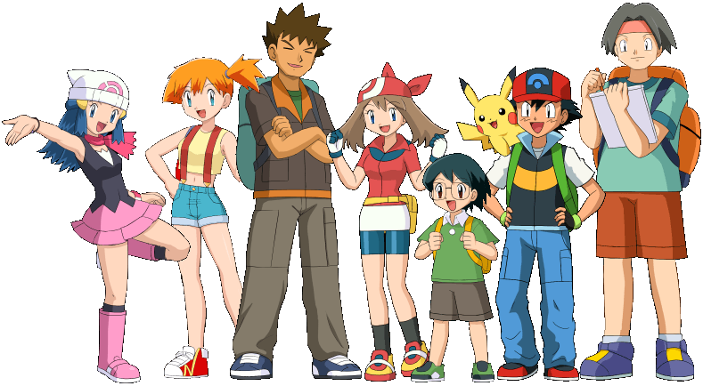

Entrenadores Pokémon
¿Qué es un entrenador Pokémon?

Los entrenadores Pokémon (Pokémon Trainer en inglés) son personas que se encargan de capturar, criar, entrenar y cuidar de dichas criaturas. El término “Entrenador Pokémon” se puede también utilizar en un contexto más amplio: Es cualquier persona que tenga por lo menos un Pokémon, puede ser considerada un amaestrador de Pokémon. En este sentido, la gente en las ocupaciones relacionadas de Pokémon, tales como coordinadores de Pokémon o criadores de Pokémon, puede también ser considerados para ser entrenadores Pokémon. El nombre del entrenador original de cada Pokémon siempre se mantiene, aunque este se intercambie, y puede consultarse en su menú de datos, estando representado por las siglas EO (Entrenador Original).